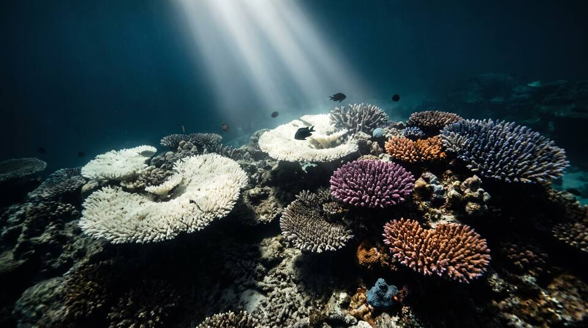

Methodology
Findings come from credible public sources: ocean and fisheries agencies, treaty bodies, regional seas conventions, courts, port and maritime authorities, scientific monitoring programmes and original reporting. Each finding is deduplicated, scored and kept under a stable ID across daily runs.

What counts as a finding
A material, documented problem in the marine or coastal environment: a specific event, condition or decision with a place, a date and a source. It can be physical (a marine heatwave, a flooded coast, a bleached reef), a pollution event, a change in living resources (a collapsed stock, a stranding, a lost habitat) or a governance and economic matter (a licence, a ruling, a treaty step, a port or fishery out of use). Marine and coastal issues belong here, including coastal flooding from sea level or storm surge, marine algal blooms and the dead zone a river causes at sea. Freshwater, drinking water, groundwater and inland flooding are out of scope. A general environmental story with no material effect on the ocean is excluded, and so is a finding that rests only on a dataset or dashboard with no report, agency page, court record or news article about the specific issue.
Categories
Every finding has one primary category and may list secondary ones. Rank is computed within each category, never across categories.
Primary issue layer
Each finding gets exactly one primary layer, a one-sentence rationale, and any secondary drivers.
Severity score (0–10)
Each finding is scored on five components from 0 to 2. Every point must rest on cited evidence. Missing data earns no points, and mixed evidence takes the lower supported score.
| Component | 0 | 1 | 2 |
|---|---|---|---|
| Harm | None documented | Potential or limited ecological or human-health harm | Documented mass mortality, habitat loss, contamination above a standard, or human harm |
| Livelihoods | No disruption | Restrictions, closures or advisories (fishery closure, beach closure, shipping restriction) | Loss of a fishery, displacement of a community, or a port or route out of use |
| Scale | A site or a single reef, bay or stock | A regional sea or a national coastline | Basin-wide or global |
| Duration | Days to weeks | Months | A year or more, chronic or recurring |
| Significance | Informal reports | Formal notice, listing, violation or advisory | Enforcement order, court ruling, treaty action, emergency declaration, IUCN status change |
Critical 9–10 High 7–8 Moderate 4–6 Low 0–3
The site calculates each level from the component scores, so a level always matches its breakdown.
Ranking rule
Findings are ranked within their category by severity score; the newer source date breaks ties. There is no global or cross-category rank: a Critical reef finding is not compared with a Critical shipping finding, and the overview never combines categories into one list.
Economic risk
Each finding carries an economic-risk level for the fishery, port, coastal economy or operator concerned, with the signals that support it. Levels are Severe, Elevated, Watch, Not Indicated and Unknown.
Quantitative evidence
- Reported: the source's own figure, cited (area bleached, tonnes spilled, stock biomass against reference points).
- Estimated: simple arithmetic on compatible sourced figures, with the conversion shown.
- Not reported: used instead of guessing. Population affected is often not reported for ocean findings.
- When credible sources conflict, the site shows both figures and explains the difference.
Trends and projections
Trend direction (worsening, improving, stable, volatile or mixed) comes from comparable dated history. A projection is an analyst's judgment, not a fact. It appears only when enough history exists, and it always states a time horizon, evidence, assumptions, a confidence level and what would reverse it. Otherwise the finding reads Insufficient History.
Source standards
Original and authoritative sources come first: NOAA, Copernicus Marine, FAO, UNEP, IMO, the International Seabed Authority, IUCN, regional fisheries bodies and regional seas conventions, national maritime and environment agencies, and official records such as licences, enforcement actions, court filings and treaty documents. Original reporting is next. Sources in other languages are accepted when they are official (a ministry, a coast guard, a court), and the record notes the language.
- Every fact comes from a page opened during the run, and every finding carries at least one dated, direct source link. Critical findings use several independent sources where they exist.
- A source's date is its publication or issue date (empty if the page shows none); accessed is the day it was opened. Database and dashboard lookups carry an accessed date only.
- No finding rests only on a dataset or dashboard: each needs a report, agency page, court record or news article about the specific issue.

Geography
The regional sea is the unit of the map, the side panel, coverage counts and the re-verification rotation. Each finding names one regional sea (or several, for a finding that spans seas), its ocean basin (Pacific, Atlantic, Indian, Southern, Arctic, or global), the countries involved as ISO codes, with ABNJ for the high seas (areas beyond national jurisdiction), an extent (site, local, national waters, regional sea, basin or global) and, where the sources allow, coordinates with a stated precision (exact, site, city, coastline or sea). Open-ocean and global findings may have a basin and no sea; they appear in the lists and the Explorer but not on a sea tile. The overview map shades each sea's approximate outline over Natural Earth coastlines; the outlines are illustrative, not hydrographic or legal boundaries. A tile grid of the same 32 seas is available as an alternative view.
| Basin | Regional seas (code and name) |
|---|---|
| Pacific | NPAC North Pacific (open ocean) · SPAC South Pacific (open ocean) · BERING Bering Sea · JPN Sea of Japan / East Sea · ECS East China & Yellow Seas · SCS South China Sea · SEA Indonesian & Philippine seas · CORAL Coral Sea & Great Barrier Reef · TASMAN Tasman Sea · NEPAC Northeast Pacific (US & Canada west coast) · TROPEPAC Eastern tropical Pacific · SEPAC Southeast Pacific (Humboldt) |
| Atlantic | NATL North Atlantic (open ocean) · SATL South Atlantic (open ocean) · NWATL Northwest Atlantic (US & Canada east coast) · GOM Gulf of Mexico · CAR Caribbean Sea · NSEA North Sea · BAL Baltic Sea · NEATL Northeast Atlantic (Celtic Seas, Biscay, Iberia) · MED Mediterranean Sea · BLK Black Sea · GOG Gulf of Guinea & West Africa · BRA Southwest Atlantic (Brazil & Argentina) · SAFR Southern Africa |
| Indian | RED Red Sea · GULF Persian Gulf & Arabian Sea · BEN Bay of Bengal & Andaman Sea · WIND Western Indian Ocean · EIND Eastern Indian Ocean |
| Southern | SOUTHERN Southern Ocean |
| Arctic | ARCTIC Arctic Ocean and its marginal seas |
Daily continuity
Research runs daily. Each run sweeps the last seven days across every category, re-verifies two regional seas in rotation by the oldest verification date, re-checks low-confidence findings, and matches new evidence to existing finding IDs before creating new ones. Changes are logged as new, changed, escalated, de-escalated, resolved, reopened or unchanged. Earlier sourced values and statuses are never erased: changes are appended with dates, and corrections are published on the Changes & Coverage page. The coverage count ("N of 32 seas") is cumulative across runs.
Data access
The findings are published as JSON under /api/ocean/. Everything on this site is rendered from the same feed.
| Endpoint | Returns |
|---|---|
| GET /api/ocean/feed[?run=] | Full feed (the latest run, or a past run by date) |
| GET /api/ocean/issues?category=&layer=&level=&sea=&basin=&country=&status=&economic_risk=&trend=&min_score=&q= | Filtered records with computed score and level |
| GET /api/ocean/issues/<id> | One record (410 with a tombstone if merged or removed) |
| GET /api/ocean/changes?since=YYYY-MM-DD | Changed records, corrections and tombstones |
| GET /api/ocean/summary | Counts by level, category, layer, trend, sea and basin, plus coverage; ocean indicators from version 1.1 |
| GET /api/ocean/runs | Published runs |
| POST /api/ocean/validate | Pre-commit check of a feed, without a token |
The latest full report, when one is published, is at /reports/latest.pdf.
No washing, no thesis
oceans.exposed does not condone "washing" of any kind: greenwashing, climate or weather washing, water washing, ocean ("blue") washing, waste washing, energy washing, or any other selective presentation that makes a company, product, government, place or technology look better, or worse, than the documented record shows. It adopts no authoritative thesis as its own: claims, projections and conclusions are reported as what the named source says, with its date. Findings are published favourable or not, whoever they concern, the sponsor included, and a finding or its absence is not a clean bill of health. The network's full statement is in the earth.exposed standards.
Limits
This is a ranking of discoverable, reported or officially documented issues, not a census of every problem in the world ocean. Low coverage or missing public records do not prove that an issue is absent. Each run's limitations are listed on the Coverage page.